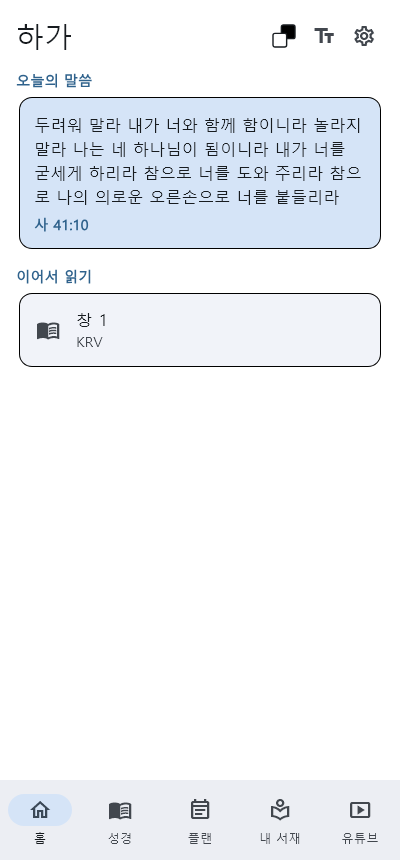
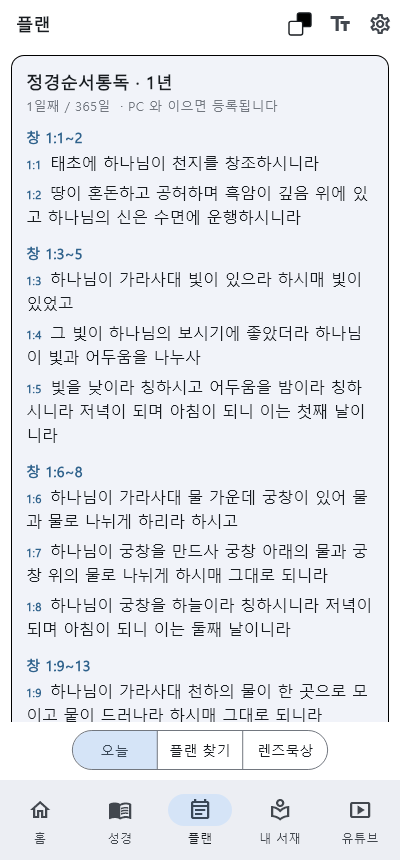
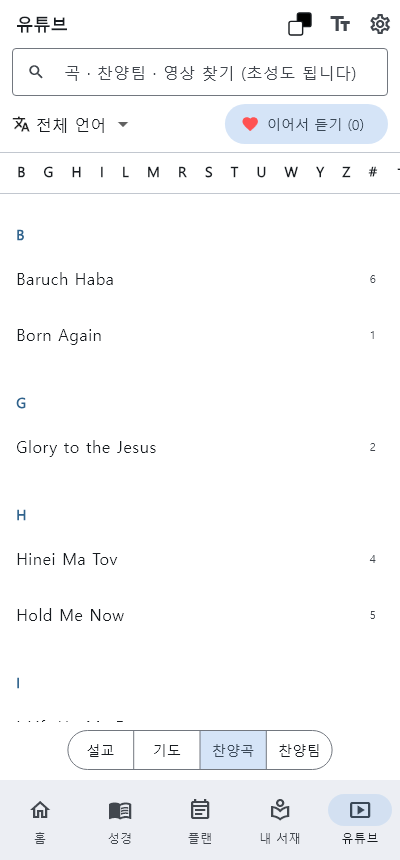

하가 다바르는 성경 본문과 구절 해설, 묵상플랜, 연결된 구절과 원어, 도서·설교집을 한 자리에서 읽는 개신교 성경 묵상 앱입니다. 폰에서도 PC에서도 같은 말씀을 이어서 읽습니다.
앱 받기주의 말씀은 내 발에 등이요 내 길에 빛이니이다시편 119:105

구절을 누르면 해설과 묵상질문, 묵상기도가 열립니다. 주석과 역본 비교도 같은 자리에서 봅니다.
한 구절이 성경 전체의 어느 구절과 이어지는지, 왜 이어지는지를 설명과 함께 보여 줍니다.
통독부터 주제 묵상까지 하루 몫을 정해 주고, 한 주제를 여러 각도에서 비추어 읽게 합니다.
스펄전, 머레이, 바운즈 같은 신앙 고전을 오늘의 말로 옮겨 읽습니다.
구절과 이어진 설교와 기도, 찬양을 언어별로 골라 듣고 멈춘 곳에서 다시 이어 듣습니다.
내가 고른 AI 에게 구절을 묻고, 여러 답을 한 글로 정리해 내 연구노트로 남깁니다.




출시되면 이 자리에서 받으실 수 있습니다.
앱 사용 중 궁금한 점이나 고칠 점을 보내 주세요. 답장은 적어 주신 메일로 드립니다.